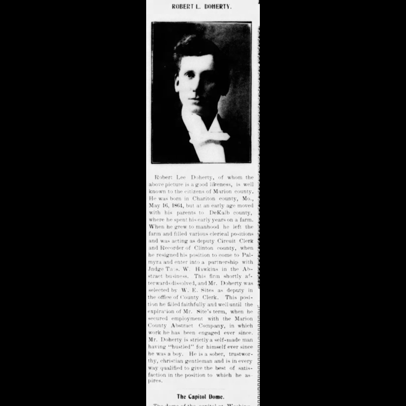

Epic Interactive Timeline
Dive into the rich history of Mark Twain Title Company with advanced animations, smooth scrolling, interactive images, pinned sections, and more. Scroll to see each milestone “pinned” and highlighted, click images to enlarge in a lightbox, and enjoy mo.js bursts whenever you click a date!
January 20, 1898

The formation of the Marion County Abstract Company is announced. A. R. Levering, J. J. Cruickshank, T. G. Dulaney, R. H. Stillwell, F. H. Schofield, A. C. Miller, Geo D. Clayton, J. H. McVey and R. L. Doherty are among the founding members. (Palmyra Spectator 1/20/1898)
January 27, 1898

Announcement of location for the company. (Palmyra Spectator 1/27/1898)
February 3, 1898

Announcement of the election of members for Marion County Abstract Company. (Palmyra Spectator 2/3/1898)
February 17, 1898

Announcement of anticipated opening of facility. (Palmyra Spectator 2/17/1898)
March 24, 1898

Advertisement for Marion County Abstract Company. (Palmyra Spectator 3/24/1898)
April 28, 1898

Advertisement for Marion County Abstract Company. (Palmyra Spectator 4/28/1898)
April 16, 1902
{kind=link}
Spectator profile of the then-owner of the Marion County Abstract Company, Robert Lee Doherty, AKA R. L. Doherty. (Palmyra Spectator 4/16/1902)
April 10, 1912

R. L. Doherty profile in the Spectator about his telescope hobby. (Palmyra Spectator 4/10/1912)
April 8, 1914

Announcement of William P Johnson purchasing a majority stock in the company. (Palmyra Spectator 4/8/1914)
July 1, 1914

R. L. Doherty remained with the company after its sale. (Palmyra Spectator 7/1/1914)
June 12, 1935

William P Johnson passed away and left the company to his 2 sons, Robert Johnson and Stewart Johnson. (Palmyra Spectator 6/12/1935)
January 6, 1943

Both Stewart Johnson and Robert Johnson were inducted into World War II and had to close the company down for “the duration.” (Palmyra Spectator 1/6/1943)
October 20, 1943

Stewart Johnson and Robert Johnson profile on their service in the war. (Palmyra Spectator 10/20/1943)
November 14, 1945

Announcement of the re-opening of the Marion County Abstract Company. (Palmyra Spectator 11/14/1945)
November 14, 1945

Profile for the re-opening of the Marion County Abstract Company. (Palmyra Spectator 11/14/1945)
October 3, 1957

Announcement of Bob Johnson purchasing the company. (Palmyra Spectator 10/3/1957)
March 9, 1960

Article detailing the Palmyra Explosion of 1960, which occurred March 2, 1960. (Palmyra Spectator 3/9/1960)
March 9, 1960

Article detailing the Palmyra Explosion of 1960, which occurred March 2, 1960. (Palmyra Spectator 3/9/1960)
March 9, 1960

Photo showing the building damage. (Palmyra Spectator 3/9/1960)
March 10, 1960

Announcement thanking everyone for the help after the explosion. (Palmyra Spectator 3/10/1960)
November 24, 1960

Photograph showing the new building rebuilt after the explosion. (Palmyra Spectator 11/24/1960)
November 24, 1960

Article showing the new building rebuilt after the explosion. (Palmyra Spectator 11/24/1960)
November 24, 1960

Century Press newspaper post congratulating Marion County Abstract Company on their new building. (Palmyra Spectator 11/24/1960)
November 24, 1960

Photo showing the deed writing process used. (Palmyra Spectator 11/24/1960)
November 24, 1960

Photo showing the microfilm process. (Palmyra Spectator 11/24/1960)